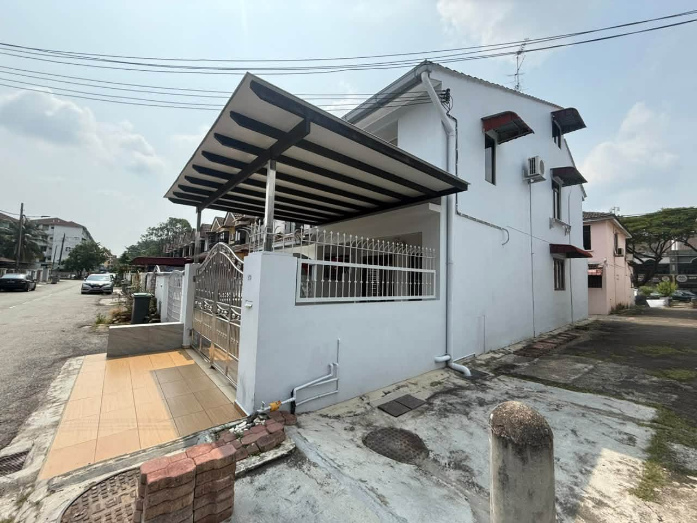
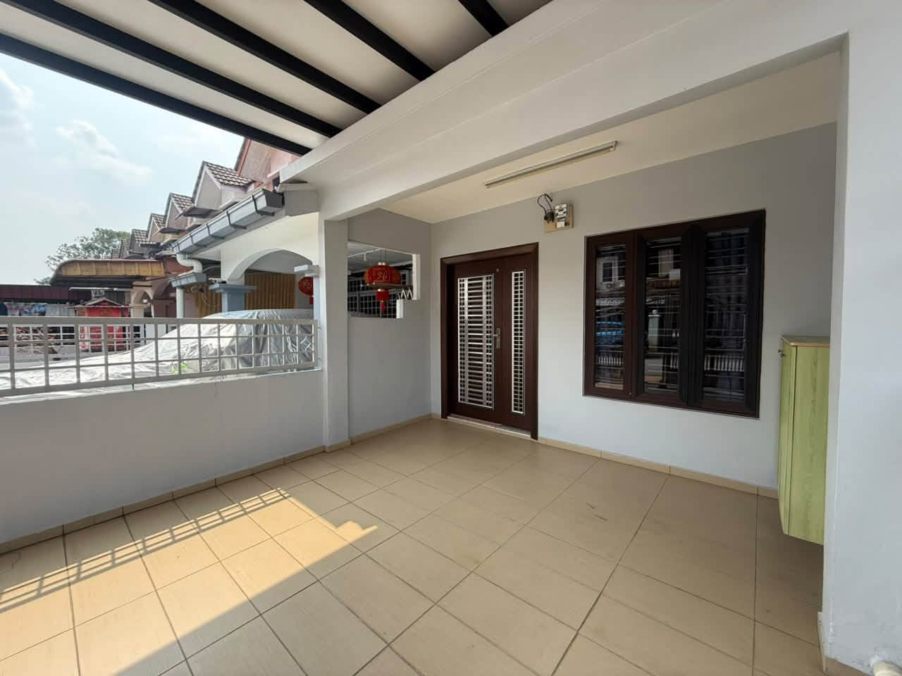
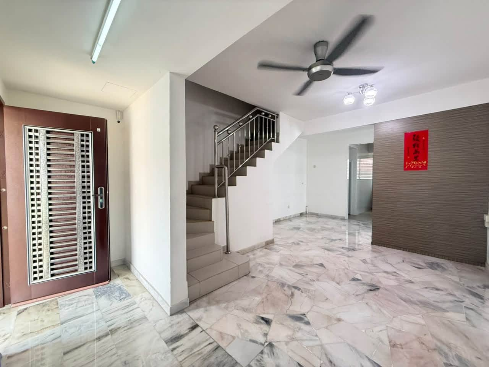
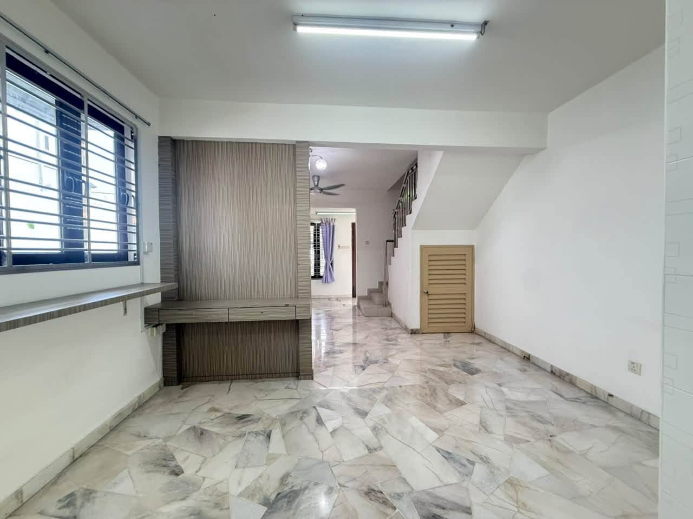

← Kembali ke senarai hartanah
DIJUAL · TAMAN TAN SRI YAACOB
Rumah Teres 2 Tingkat Kos Sederhana Lot Hujung
Jalan Putra 5, Taman Tan Sri Yaacob, Johor Bahru
RM518,000Pegangan Bebas · Bukan Bumi · Lot Hujung · Menghadap Selatan




BUTIRAN HARTANAH
Rumah lot hujung yang telah diubah suai dengan tambahan ruang.
Rumah teres 2 tingkat kos sederhana lot hujung di Jalan Putra 5, Taman Tan Sri Yaacob ini mempunyai keluasan tanah 14' × 55', menghadap selatan dan susun atur yang praktikal selepas diubah suai.
Jenis hartanahTeres 2 tingkat kos sederhana
Keluasan tanah14' × 55'
Bilik tidur2
Bilik air2
PeganganPegangan Bebas
Status BumiBukan Bumi
LotLot Hujung
ArahSelatan
UBAH SUAI & TAMBAHAN
Apa yang telah diubah
Ruang tamu diperluasRuang tamu tambahan di bahagian hadapan rumah.
Balkoni diperluasKawasan balkoni di tingkat atas telah diperluas.
Susun atur bilik diubahSusun atur asal 3 bilik di tingkat atas ditukar kepada 2 bilik.
Mezanin bilik utamaTingkat mezanin tambahan dalam bilik tidur utama.
HUBUNGI
Ingin melihat hartanah ini?
Miss Loo · MW Properties · REN50378
WhatsApp: +60 16-788 9571
E-mel: pohyuen0331@gmail.com